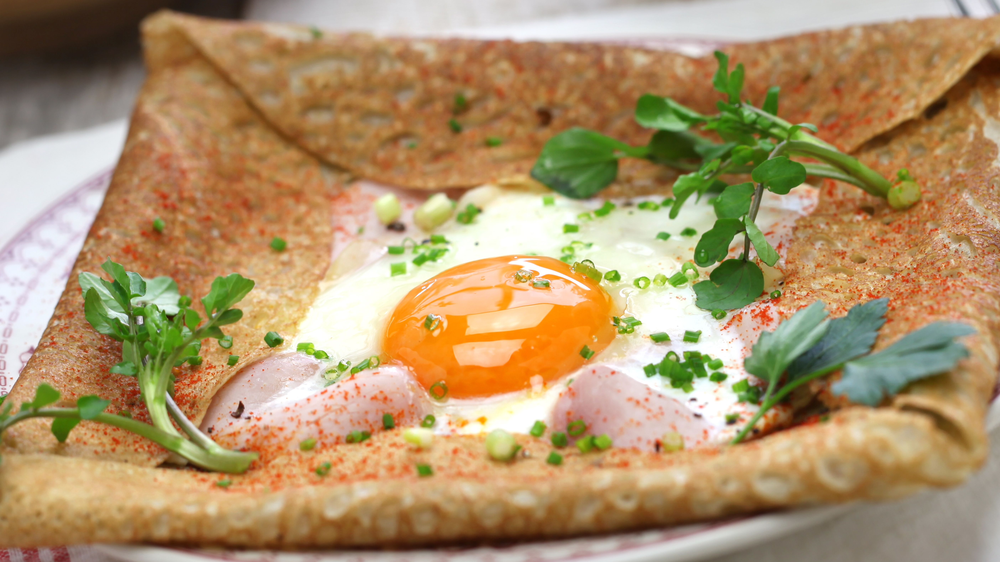

Home
Crepes

Delicious salty crepes with egg, ham, and cheese...
This crepes recipe will warm your heart, and your stomach !
You will first have to make the crepes batter, then once it has rested, you will just need to add the mixture on a hot pan, and add the essential ingredients on it (egg, cheese, ham).
Ingredients for 6
- 2 eggs
- 25cl of milk
- 25cl of water
- 40g of butter
- 250g of flour
- Pepper
- Salt
- Oil
Steps
- Pour the flour into a bowl. In the middle, make a well and break the 2 eggs into it. Whisk everything together, gradually adding the milk and water. Finish by adding the melted butter. Add pepper and salt (a little!)
- Let this preparation rest for 2 hours before using it.
- Heat a crepe pan with some oil on it. When it is very hot, pour in the crepe batter.
- Cook the first side of the crepe, and turn the crepe over. Break an egg on top, add pepper, and cover the pan with a lid (to cook the egg). Then add the grated cheese and the slice of ham.Fold two sides over and fold the other two.
- Repeat step 4 until all the crepe batter is used up. Or, if everyone ate enough salty crepes, you can use the remaining crepe batter to male plain crepes (to which you can add sweet things !).